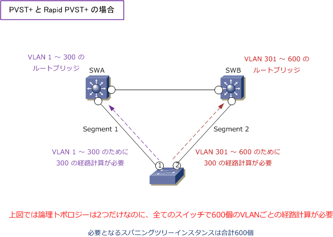
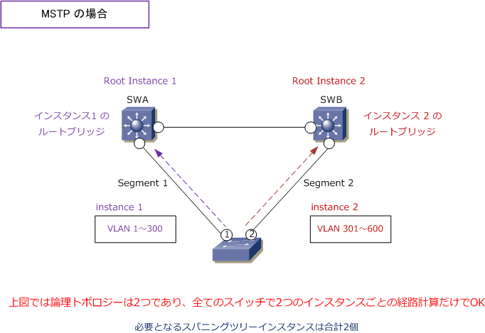

MSTP ( Multiple Spanning Tree Protocol )
MSTPとは
MSTP（ Multiple Spanning Tree Protocol ）は、複数のVLANをインスタンスという単位で処理できる 機能がある IEEE802.1S で定義されているプロトコルです。インスタンスとは、ネットワークにおける 論理トポロジーのこと。PVST+ ではVLANごとに異なるSTPインスタンスを生成し、Rapid PVST+では VLANごとに異なるRSTPインスタンスを生成してVLANごとにSTP計算が行われますが、MSTP は複数の VLANを1つにまとめたインスタンスごとにSTP計算が行われるため、スイッチのCPU負荷を軽減できます。
| 比較項目 | STP | RSTP | MSTP |
|---|---|---|---|
| IEEE定義 | IEEE802.1D | IEEE802.1W | IEEE802.1S |
| Catalystのサポートモード | PVST+ | Rapid PVST+ | MSTP |
| CatalystのSTP計算の単位 | VLANごと | VLANごと | 複数VLANをまとめたインスタンスごと |
| spanning-tree mode | pvst | rapid-pvst | mst |
| 対象ネットワークの規模 | 小・中規模 | 小・中・大規模 | 大規模 |
以上の通りCiscoでサポートしているスパニングツリープロトコルは「PVST+」「Rapid PVST+」「MSTP」 の3種類となります。他メーカでサポートする「STP」や「RSTP」も含めた比較表は以下の通りとなります。
| プロトコル | 標準化 | 収束 | 負荷分散 | ツリーの数 |
|---|---|---|---|---|
| STP | IEEE802.1D | 低速 | 不可 | 1つ |
| PVST+ | Cisco独自 | 低速 | 可 | VLANごとに1つ |
| RSTP | IEEE802.1W | 高速 | 不可 | 1つ |
| Rapid PVST+ | Cisco独自 | 高速 | 可 | VLANごとに1つ |
| MSTP | IEEE802.1S | 高速 | 可 | 複数のVLANに1つ |
STP（PVST+）と RSTP（Rapid PVST+）の動作
PVST＋では、Per-VLAN でVLAN単位ごとにSTPが構築されて、下図のとおり最適に負荷分散されます。 ただし、PVST+の場合はVLANごとに1つのスパニングツリーインスタンスが保持されるため、下図では 論理トポロジーは2つだけなのに600の経路計算が必要となります。その結果、VLANごとにBPDUが送信 されることなり、ネットワーク上の全スイッチのCPUリソースが消費されます。Rapid PVST+ でも同じ。

MSTP の動作
MSTPでは、「複数のVLANを1つのインスタンスにマッピングする」ことで、VLAN単位ごとではなくて、 インスタンスごとにSTP計算できるようになりました。下図では、1 ～ 300のVLANを「インスタンス 1」 301 ～ 600のVLANを「インスタンス 2」にマッピングした結果、論理トポロジーと同じ数の「2」だけの 経路計算だけでOKであり、ネットワーク上の全スイッチのCPUリソースの負荷が軽減されます。

MSTPは、RSTPに基づいたプロトコルであるため、MSTPを有効化するとRSTPの高速収束も有効になり、 正常時と障害時の動作はRSTP同様に高速です。MSTPの場合、STPやRSTPに比べて設定が難しくなります。